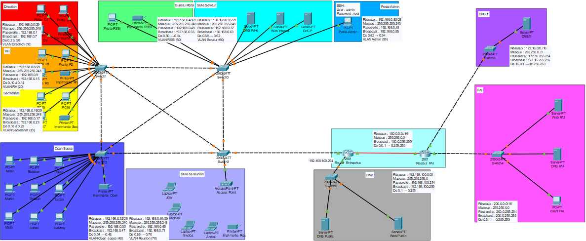
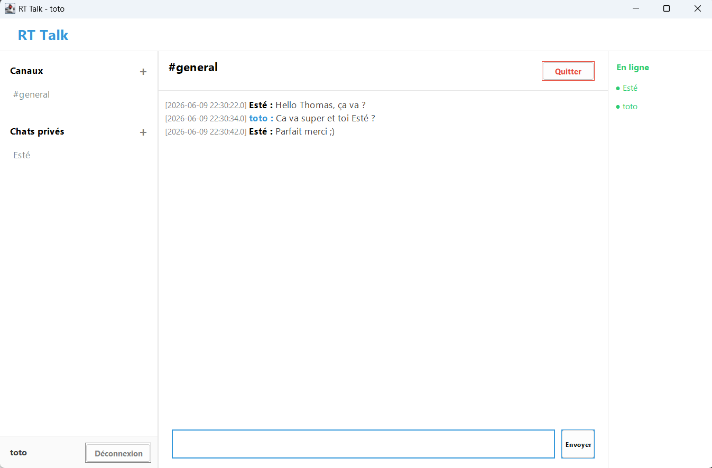
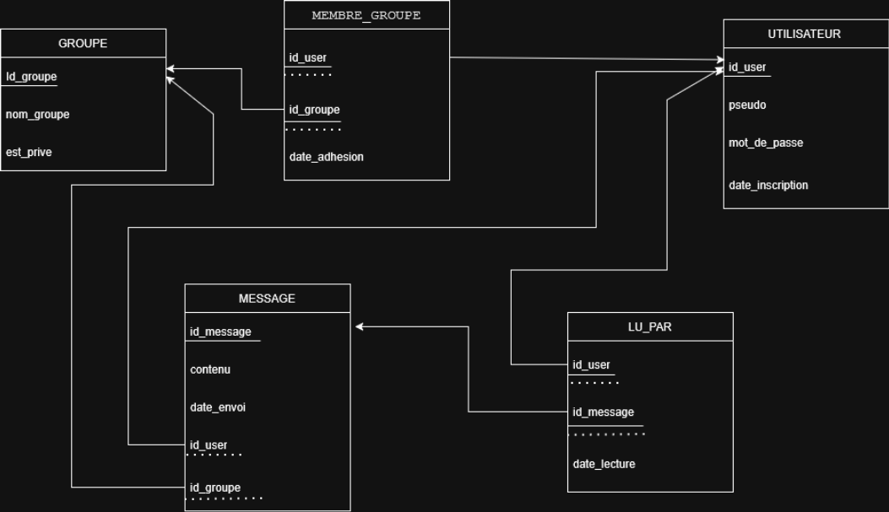
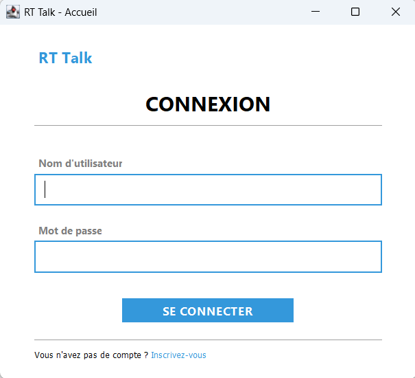

Je suis Esteban Cornier Lecan, étudiant en BUT Réseaux et Télécommunications à l'IUT de Blois, en alternance chez SPIE ICS en tant qu'Architecte Digital Workplace.
Passionné par les infrastructures réseau, la cybersécurité et le développement système, je construis mes compétences aussi bien en formation qu'en autodidacte, notamment à travers des plateformes de pratique en ligne.
Mon objectif : concevoir et sécuriser des architectures numériques robustes pour les entreprises de demain.
Conception et déploiement d'une infrastructure réseau complète pour une PME — VLANs, OSPF, DMZ, NAT, SSH.
Application de chat Client/Serveur multithread avec salons, historique adaptatif, statut en ligne et base de données MySQL chiffrée MD5.
Outil de monitoring réseau — analyse de trafic en temps réel et détection d'anomalies sur le réseau local.
SPIE ICS — Malakoff
Conseil et conception de solutions avant-vente pour les infrastructures numériques d'entreprise. Accompagnement des clients dans leur transformation digitale.
IUT de Blois
Spécialisation Cybersécurité — Parcours en apprentissage. Formation aux architectures réseau, protocoles, sécurité des systèmes d'information.
Lycée Claude de France
Spécialités Mathématiques & NSI (Numérique et Sciences Informatiques).
Collège Maurice Genevoix
LAN/WAN · VLANs · TCP/IP · Cisco
TNT · DVB-T · Fibres · 4G/5G
VoIP · SIP · IPBX · ToIP
Shell · Scripts · Automatisation
Requêtes · BDD · Modélisation
POO · Sockets · TCP/IP · JVM
Scripting · Réseau · Automatisation
Web · Intégration · Back-end basique
Kali · OSINT · Top 8% · 42+ rooms
Certification nationale
570 pts ObtenuCisco Networking Academy
ObtenuANSSI
ObtenuTryHackMe
ObtenuTryHackMe
En coursOuvert à toute opportunité, collaboration ou simple échange autour des réseaux et de la cybersécurité. N'hésitez pas à me contacter !
En première année de BUT R&T, j'ai conçu et déployé de A à Z l'infrastructure réseau complète d'une petite entreprise en totale autonomie sur environ 25 heures. L'objectif : réinvestir toutes les notions vues en cours dans un contexte réaliste — réseau multi-départements segmenté, services internes, DMZ et connexion internet via un FAI simulé.

| Département | VLAN | Réseau | Masque |
|---|---|---|---|
| Direction | 10 | 192.168.0.0 | /29 |
| RH | 20 | 192.168.0.8 | /29 |
| Secrétariat | 30 | 192.168.0.16 | /29 |
| Open Space | 40 | 192.168.0.32 | /26 |
| RSSI | 50 | 192.168.0.48 | /26 |
| Serveurs | 60 | 192.168.0.56 | /29 |
| Salle réunion | 70 | 192.168.0.64 | /26 |
| Admin | 99 | 192.168.0.80 | /28 |
Le routage est assuré par OSPF avec différents backbone, configuré sur le routeur d'entreprise. Les switches sont de niveau 2 — c'est le routeur qui assure le routage inter-VLAN. La connexion vers internet passe par le routeur d'entreprise (NAT) relié au routeur FAI.
Distribution automatique des adresses IP sur tous les VLANs internes.
Résolution de noms pour les ressources internes uniquement.
Serveur web accessible uniquement depuis le réseau interne.
Access Point sur VLAN 70 pour les laptops en réunion.
Résolution de noms exposée sur internet, hébergée en DMZ.
Site de l'entreprise accessible depuis internet via la DMZ.
Poste admin (VLAN 99) pilote tous les switches & routeurs à distance.
Traduction d'adresses sur le routeur d'entreprise pour l'accès internet des postes internes.
La difficulté majeure du projet a été la configuration des listes de contrôle d'accès (ACL) sur le routeur d'entreprise. Il fallait autoriser les flux légitimes (DMZ ↔ internet, accès inter-VLANs) tout en bloquant les accès non autorisés, sans couper la connectivité existante. Un mauvais ordonnancement des règles bloquait tout le trafic.
Ce projet m'a permis de concevoir et configurer un réseau complet avec un plan d'adressage IP rigoureux, la segmentation par VLANs, le routage OSPF sur le routeur d'entreprise avec des switches niveau 2, et le déploiement de services réseau (DHCP, DNS, HTTP, NAT, SSH). Travailler seul sur une infrastructure aussi complète m'a obligé à être méthodique à chaque étape.
Une erreur de plan d'adressage en début de projet peut tout remettre en cause. Le schéma sur papier est aussi important que la configuration.
Tracer le chemin d'un paquet étape par étape pour identifier le blocage. Les ACL m'ont appris à analyser un réseau de façon systématique.
Comprendre OSPF sur un schéma et le configurer sur un routeur reliant 8 VLANs avec des switches niveau 2, c'est une expérience très différente.
R&Talk est une application de messagerie instantanée complète développée en binôme avec Thomas Latterner, simulant le fonctionnement d'un outil comme Discord ou Slack. Le projet repose sur un serveur multithread capable de gérer plusieurs clients en parallèle, d'assurer le routage des messages vers les bons salons, de maintenir un historique adaptatif basé sur la dernière connexion de l'utilisateur, et de sécuriser les données via une base de données MySQL avec mots de passe chiffrés en MD5.
ServerSocket)GestionnaireChat.java)
Le serveur écoute en permanence sur le port 3309. À chaque nouvelle connexion, un thread GestionnaireClient est instancié pour gérer ce client de façon isolée. Le filtrage des messages est assuré côté serveur : un client dans le groupe "Général" ne reçoit pas les messages du groupe "Privé".


1 thread GestionnaireClient créé par client connecté. Gestion parallèle et isolée.
Filtrage par salon : seuls les membres du groupe concerné reçoivent le message.
Classe GestionnaireChat.java centralisée : seule interface autorisée aux requêtes SQL. Le serveur n'a pas accès direct à la base — limitation volontaire des droits pour sécuriser les échanges. Mots de passe chiffrés en MD5.
Interface Swing avec authentification (nom d'utilisateur + mot de passe). Lien d'inscription intégré.
Barre latérale avec canaux publics et discussions privées. Bulles colorées par expéditeur.
Récupération automatique des messages non lus depuis la dernière connexion de l'utilisateur — pas un nombre fixe, mais un historique contextuel.
Indicateur de présence en temps réel : les utilisateurs connectés apparaissent comme "en ligne" dans l'interface, mis à jour à chaque connexion/déconnexion.
Swing + réseau : synchroniser l'interface graphique Swing avec la réception des messages réseau. Les deux opèrent sur des threads différents, provoquant des fermetures inopinées de sockets et des blocages d'affichage. Solution : gestion rigoureuse de l'EDT (Event Dispatch Thread) via SwingUtilities.invokeLater().
Sécurité de la base de données : le serveur ne devait pas avoir un accès direct et illimité aux requêtes SQL. La classe GestionnaireChat.java a été conçue comme une couche d'abstraction unique — seule elle peut interroger la base, limitant les droits exposés au serveur. Les mots de passe sont stockés en MD5.
R&Talk m'a permis de maîtriser la programmation réseau en Java de bout en bout : conception du protocole TCP, gestion du multithreading côté serveur, intégration d'une base de données via JDBC et développement d'une interface graphique Swing. Ce projet prouve que je sais développer les outils que j'administre — compétence clé du BUT R&T.
Gérer des centaines de messages simultanés sans bloquer l'interface : comprendre les threads et leurs interactions, c'est indispensable dès qu'on touche au réseau.
Ne pas exposer toutes les requêtes SQL au serveur : GestionnaireChat.java comme couche d'abstraction, mots de passe en MD5, droits limités. La sécurité se construit par conception, pas en ajout.
Se répartir le serveur et le client, synchroniser le code via Git, s'accorder sur les protocoles de communication : une vraie expérience de développement collaboratif.
Ce projet sera ajouté prochainement.
Outil de monitoring réseau développé en Python. Il permet l'analyse de trafic en temps réel, la détection d'anomalies et le diagnostic d'infrastructure sur le réseau local.
Certification nationale des compétences numériques
Certification nationale qui évalue les compétences numériques sur 5 domaines : information et données, communication et collaboration, création de contenu, protection et sécurité, environnement numérique.
ObtenuCisco Networking Academy
Premier module du cursus CCNA officiel Cisco. Couvre les fondamentaux des réseaux : modèle OSI, protocoles TCP/IP, adressage IPv4/IPv6, routage statique et configuration de base des équipements Cisco.
ObtenuAgence Nationale de la Sécurité des Systèmes d'Information
Formation en ligne officielle de l'ANSSI sur la sécurité des systèmes d'information. Couvre les bonnes pratiques de cybersécurité, la sécurité des réseaux, la cryptographie et la gestion des risques.
ObtenuTryHackMe
Parcours de formation TryHackMe couvrant les bases de la cybersécurité : fondamentaux réseau, sécurité web, Linux, Windows et notions essentielles pour débuter en sécurité offensive et défensive.
ObtenuTryHackMe
Parcours avancé couvrant les concepts fondamentaux de la cybersécurité moderne : cryptographie appliquée, exploitation web, forensics, et sécurité des systèmes. Actuellement en cours de complétion.
En cours